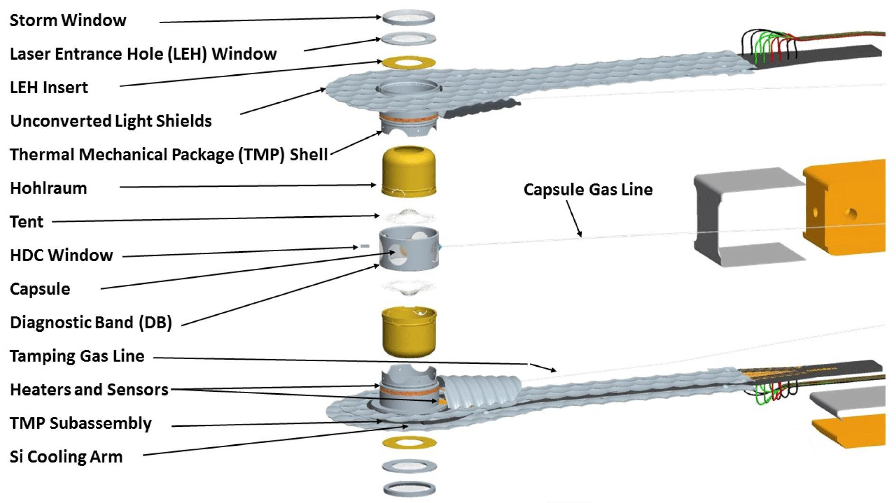
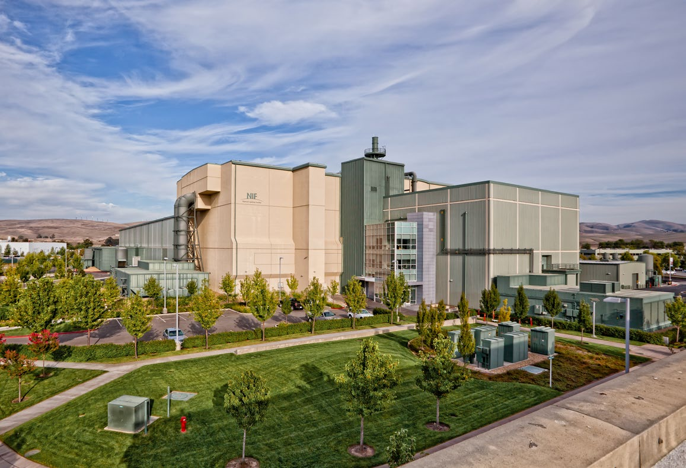
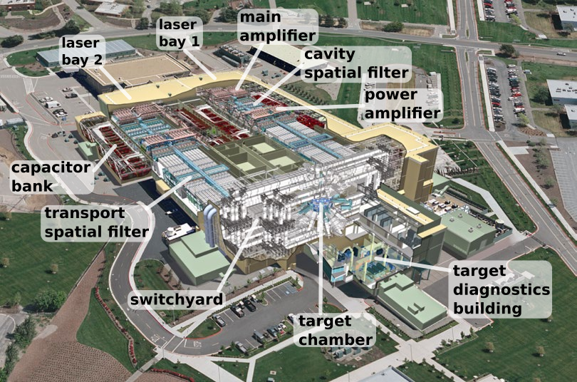
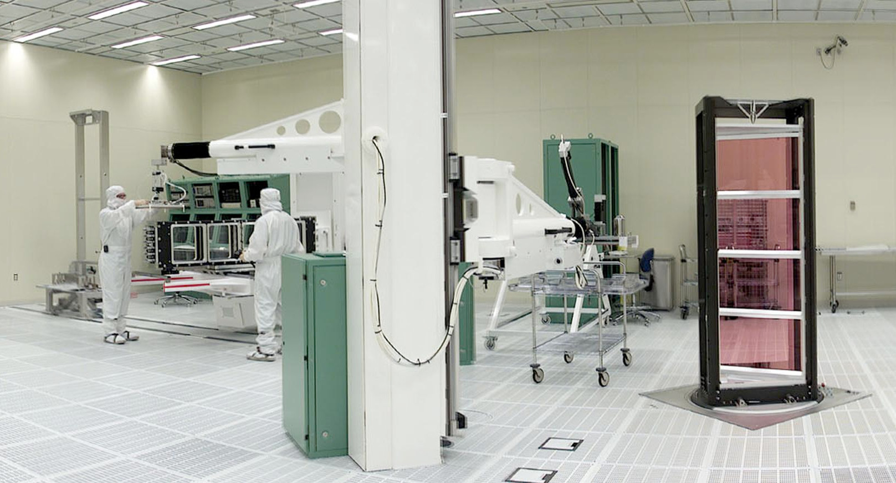

Introduction
On December 13, 2022, the US Department of Energy (DOE) held a press conference announcing that a laser fusion capsule shot at the National Ignition Facility (NIF) on December 5 had achieved ignition. This capsule produced 3 megajoules (MJ) of fusion energy when it was illuminated by 2 MJ of laser light. Getting more fusion energy out than energy put in is usually called “break even,” but for the purpose of defining NIF's middle initial when it was being built, the fusion community agreed that break even would unquestionably demonstrate “ignition.” So what this announcement really means is that everyone now agrees that NIF has begun to do the job its designers promised.
I am a PhD physicist who designed targets for NIF and its predecessors from 1980 until my retirement on the last day of 2019. In addition to designing targets, I contributed to the design of the NIF laser itself - so I know a lot about both the laser and the targets it shoots. Although the DOE announcement and especially the subsequent panel discussion were well done, the media coverage focused on the pie-in-the-sky prospects for fusion (whether magnetic or inertial) as a commercial energy source, completely obscuring the real importance of the achievement. The immediate benefit of NIF in general and ignition in particular has to do with its mission to understand nuclear weapons without needing to set them off. The less tangible benefit is to generate excitement for science like marquee NASA missions or particle accelerators.
Here I want to try to capture the wonder of what we built, and explain our obsession with nuclear fusion using a few pictures of fusion targets and the NIF laser. The best answer for why we are trying to ignite fusion reactions comes down to the challenge of the thing. The closest cliche is probably why people climb mountains or more aptly why societies build monuments. Sometimes these challenges turn out to be useful - for example etching a billion logic gates onto a silicon chip - but more often your only concrete reward is the satisfaction and pride of doing something hard. As the decades have passed it has become more and more obvious that the reason to pursue fusion is not for the original goal of generating electricity. Given the 70 years of concerted effort spent on this small first step, fusion energy is obviously science fiction - or at the very least economic fiction. It's time we were more honest about why studying fusion is worthwhile.
Target
Nuclear fusion, unlike nuclear fission, requires heating the reactants to an enormous temperature for them to collide hard enough to overcome a very large (by chemical standards) activation energy. The unit of temperature we use in fusion target design is the keV, for kilo-electron-Volt, which is 11.6 million Kelvin (or degrees Celsius - the difference between degrees absolute and relative to the melting point of water is completely negligible). Fusion fuel, a mixture of deuterium and tritium, heavy isotopes of hydrogen, has to be heated to 4 to 5 keV before it will begin to react fast enough to heat the fuel to the more than 15 keV it must reach to burn vigorously - the self-heating process called ignition. Thus the challenge of fusion is to figure out how to heat the fuel to 50 million degrees - ten thousand times temperature of the surface of the Sun - while holding it together long enough for it to ignite and burn.
Anything that hot will explode and fly apart very quickly (unless you can contain it in a magnetic bottle - but that's another story), so you need to arrange things so that it burns more quickly than it flies apart. Like any binary reaction, the fusion reaction rate is proportional to the density of the fuel. The time it takes to fly apart, on the other hand, is proportional to its size - its radius if it is a ball. A ball of fusion fuel at solid density the size of a grapefruit is a hydrogen bomb, so at a much smaller size that won't level the surrounding countryside, you need to compress the fusion fuel to enormous densities in order to get the density-radius product it needs to burn before it flies apart.
NIF ignition capsules accomplish this by imploding a one millimeter radius hollow shell of solid hydrogen fusion fuel by a factor of about 20 in radius, crushing it to about a thousand times its ordinary solid density. We grow the initial solid hydrogen shell inside a hollow sphere made of diamond by lowering it to cryogenic temperatures. To accomplish the implosion, we mount the diamond capsule at the center of a tiny oven (called a hohlraum) about the size of a pencil eraser. The NIF laser beams rapidly heat the inside of this oven to about 0.3 keV. That's not nearly enough to ignite the fusion reaction, but it causes the outside of the diamond capsule to explode producing several hundred million atmospheres of pressure that implodes the inside of the capsule and its fusion fuel. The compressive heating from that implosion produces the 4 or 5 keV in the fuel that ignites it, and its high density ensures it will burn before it flies apart. The time scale for the implosion is a few nanoseconds; the time scale for the fusion burn is about a tenth of a nanosecond.

Here is a 2 mm diameter diamond ignition capsule in all its glory before it is mounted inside the hohlraum. Note the jet black color of nanocrystalline diamond - transparent gemstones are giant single crystals. If you look very closely above the target you can just make out the glass fill tube - the whisker at the top the capsule is hanging from. That tube is only a few microns in diameter, but it is hollow and there is a 2 micron hole through the shell under it that will be used to fill the capsule with deuterium-tritium fuel before the shot.
We suspend the capsule at the center of a hollow can called a hohlraum, tented between two ultra thin polyimide films. The inner walls of the hohlraum are made of uranium coated by a thin layer of gold. The upper and lower hohlraum halves are thin sleeves press fit into an aluminum can which provides both mechanical support and thermal conductivity - the thermo-mechanical package (TMP). 96 laser beams enter through the top laser entrance hole (LEH), and 96 enter through the bottom. Each LEH is covered by a very thin polyimide film window which the lasers quickly burn through. This film is necessary because the hohlraum is filled with a hydrogen and helium gas to tamp the inner walls when the laser hits them and to conduct heat to hold the capsule at crygenic temperature before the shot. The storm window over the laser entrance holes had to be added in order to prevent ice from condensing on the LEH window from the not-quite-perfect vacuum of the target chamber. The black silicon cooling arms (covered by crinkled unconverted light shields) both support the hohlraum at chamber center and conduct heat away to hold the target at cryogenic temperatures.

Here is a hohlraum without the crinkly foil covers that will eventually cover the black silicon cooling arms holding it at the top and bottom. (Without the crinkles, the flat silicon arm surfaces would reflect the unfocused unconverted light of a NIF beam entering from one side of the target chamber directly into the optics of the beam on the opposite side of the chamber, severely damaging them.) If you look carefully, you can see the silicon ring that holds the top of the hohlraum is cut into an intricate pattern so only a ring of rectangular pads touch the hohlraum cylinder. If you follow back from each of those contact points to where the fingers are holding the arms, you will find that the distances are all the same, so that heat will be conducted perfectly radially away from the axis of the hohlraum cylinder even though the paddle handle extends in only one direction.

The holes with spokes cut into the vertical walls of the hohlraum are lines of sight for the X-ray tomography setup required to monitor the layer growth in the cryo target positioner where the layer is grown before it moves the final 20 feet to target chamber center a couple of hours before the shot. Incidentally, what you are looking at is an aluminum sleeve (despite its apparent gold color in this photo). The hohlraum itself is press fit into this sleeve - the only part of the hohlraum itself visible in this picture is the gold arc forming the laser entrance hole (LEH) at the top. The LEH window has not been installed yet on this target, so you can still see it. You can also see the wires connected to two dark rings above and below center of the can - those are heaters used to precisely adjust the vertical temperature gradient which is critical to growing a perfectly concentric frozen hydrogen layer inside the capsule.

Here's a completed ignition target just before the cryogenic shroud is closed. Note the windows in the shroud needed to be able to see the target to align the lasers and diagnostics on it after the fuel layer has been grown and it has been moved to chamber center. I don't know this for sure, but the shroud is probably opened when the layer is being grown in the target positioner chamber before the shot - this photo is while it is being loaded into that system. If you look closely, you can still see the heater rings around the TMP here for reference. About 10 seconds before the shot, the shroud will open like a clamshell and fold all the way back close to 180 degrees from its current position to avoid destruction. The hinges are just slightly out of focus at the upper left. The target and silicon arms are instantly vaporized when the laser fires, and the copper tube you see here is bent back and badly burned - the energy absorbed by the target is equivalent to about a half pound of TNT (and if it ignites, another half pound of TNT fusion yield).

And bang! An ignition shot. This is a black and white image - the colors just represent brightness in the original image. You can see the fully open cryo shroud on the arm at the left - that's what the target was connected to. The diagnostic snouts at the top and right hold pinhole arrays for two X-ray framing cameras making movies of the shot viewed from above and from the side. The snout on the left above the target positioner and open shroud holds a much more complex array of pinholes for a neutron imaging diagnostic. The funky little thing that looks light a gunsight atop the framing camera snout on the right supports a foil that converts neutrons to protons for a magnetic recoil spectrometer. Many more diagnostics are farther away than these close in components. The little white flecks or stars visible around the dark edges of the image are not debris from the target - it was completely vaporized - but are caused by fusion neutrons zipping through the camera. The diagnostic instruments must also cope with this effect, often making them much more difficult to design.
The aftermath. This was the only picture I could find showing what it looks like immediately after a shot. You have a really good view here of the cryo shroud in its fully open and retracted position. You can also see the X-ray framing camera snouts coming in from the left and top. The forlorn little wires dangling at the lower right are all that's left of the heater and thermocouple wires that were running out the silicon arms. But the most impressive thing is the remains of the bright copper tube in the above closing shroud photo - you see the dark strip wrapping around the bright circular disk behind the dangling wires? That copper tube has been split in half and wrapped backwards by the force of the vaporized target wind. Pretty impressive considering all we did is shine a bright light on the target...
Laser
Here is a portrait of the National Ignition Facility against the Livermore hills. The Altamont Pass windfarm is visible on the horizon along the ridgeline to the left. The cream colored structure is one side of the switchyard where the laser beams turn from the laser bays stretching behind to the target chamber. The green cube in front is the target diagnostics building; the target chamber is at its intersection with the switchyard. The overall design is oddly reminiscent of a cathedral with the switchyard as the transept and diagnostic building as sanctuary, although the laser bays would be two parallel naves.
A cutaway view shows that the NIF laser fills the building. NIF is the largest laser in the world, capable of delivering roughly 50 times the energy of the second largest laser. The main and power amplifiers for each beamline contain over a ton of neodymium-doped laser glass, or 200 tons for the entire 192 beam facility. This is how much lasing medium you need to be able to heat the tiny target capsule to thermonuclear ignition - a giant warehouse full of laser. The overriding design consideration for NIF was to build the lowest cost laser, not the most efficient laser. It takes about 400 MJ of electrical energy (over five minutes at one megawatt) to charge the capacitor banks that fire the flashlamps that pump the 200 tons of laser glass to deliver that 2 MJ pulse of light to the target.

This diagram shows the full-sized optics in the NIF laser. Each of the 192 laser beams has roughly a 35 cm square cross section - square because you can pack square beams closer together. If the beams were any smaller, the laser beams would destroy the optics. Over two billion watts per square centimeter of unfocused light passes through these optics on the way to the target. For comparison, full sunlight reaching Earth is one tenth of a watt per square centimeter, and even at the surface of the Sun sunlight is only six thousand watts per square centimeter. So each NIF beam is nearly half a million times brighter than the surface of the Sun before focusing onto the target. The optics in the laser bays are mounted in stacks of four beams called columns; a pair of columns is called a bundle; six bundles side by side is a cluster; each laser bay contains two clusters.

This worker is on top of one of the 24 main amplifier bundles - eight of the 192 NIF beams are in the box he is standing on. Each cable connects to a two meter tall xenon flashlamp (like in a camera but a lot bigger). A huge electrical pulse from the capacitor banks energizes the flashlamps about a microsecond before the shot. It also triggers a frightful corona discharge where he is standing, but unfortunately I couldn't find a picture of that. The flashlamps pump the pink neodymium glass amplifier slabs, storing the energy that the laser pulse will extract in the few billionths of a second of the shot. The entire laser pulse is under ten feet long - less than the distance between this man and the photographer.
The optics assembly building (behind the laser bays) is where large optics are mounted and refurbished. One column of pink neodymium glass amplifier slabs is on the right. Each slab weighs about 80 pounds. The technicians are working on one column of plasma electrode Pockels cells (PEPC) laying on its side on the left. These are large optical switches made of KDP (potassium dihydrogen phosphate, a salt). A perfectly timed electrical pulse applied to the PEPC traps then releases the laser pulse so it makes four passes through the main amplifier instead of just two. Being able to build a PEPC at this size was one of several significant technical risks of the NIF design; all these difficult design challenges were met.

This is a composite view of the NIF target chamber with several concrete floors separating the different levels removed (hence the strange apparently floating handrails and support beams). The blue target chamber is a vacuum chamber ten meters in diameter. The huge rectangular tubes attached to the top and bottom of the chamber are the final optical assemblies (FOA), each of which houses a “quad” of four laser beams in a rectangular arrangement. It would obviously be impossible to squeeze more laser beams into the available space - in fact, that consideration determined the size of the target chamber. Most of the diagnostic instruments - a few of which are visible here - are therefore near the equator of the chamber at the center of this picture. The final optics include more KDP optics - doubler and tripler crystals which convert the infrared pulse output from the amplifiers, first partially into a green pulse, then into a mostly ultraviolet pulse. The wedged final focus lens deflects the residual infrared and green light - called unconverted light - so that it misses the laser entrance holes in the hohlraum. A vacuum window, debris shields, a phase plate and a polarization rotator complete the stack of final optics inside the FOA. Slow but steady improvements in the management of damage to these final optics are a big part of how the laser engineers have pushed NIF from its maximum design energy of 1.8 MJ to slightly over 2 MJ today.
Conclusion
Many very smart people have been thinking long and hard how to ignite a thermonuclear fusion reaction. The hydrogen bomb, first demonstrated in 1952, involves using a fission bomb to heat the fusion fuel. Most of the 70 years of effort to ignite fusion reactions at laboratory scale has been spent developing magnetic bottles to confine the super hot fuel (real-life cousins of the force fields of science fiction), culminating in the ITER device under construction in France. The laser fusion research leading to NIF began in earnest in 1972.
Unlike magnetic fusion, laser fusion acquired immediate practical importance in 1993: The US has been able to stop testing its nuclear weapons while maintaining the technical expertise to understand how they work in part because of large lasers like NIF. The lasers partly substitute for nuclear tests by providing a way to experiment with densities and temperatures otherwise found only in nuclear weapons. With its new ignition capability, NIF now allows us to study fusion burn without setting off a nuclear bomb. Avoiding nuclear weapons testing is an important job that NIF has been doing and can do better with ignition experiments.
Using fusion - whether inertially or magnetically confined - to generate electricity, on the other hand, is a non-starter. After 70 years, we still don't know whether it is possible. What we have learned is that even if it is possible it will be a tremendously expensive way to generate electricity - in other words, fusion is not a practical energy source. You'd need to build, fill, and shoot of order half a million of those cryogenic diamond capsules per day in a fusion power plant. It is ludicrous to pass that off as a mere engineering challenge. Furthermore, in a pure fusion economy you need to integrate your fusion reactor with a nuclear fission reactor that splits lithium to make tritium, because the fusion fuel is half tritium. (Yes, deuterium can fuse with itself, but the reactivity of that reaction is a hundred times less than the deuterium-tritium reaction, which puts it completely out of reach for any laboratory-sized machine. Proposals to use any fuel other than deuterium-tritium are completely unrealistic.)
Finally, the one good media question asked at the DOE panel discussion was to describe the changes that had been made to achieve ignition at NIF. The question was answered very narrowly, describing the minor changes over the past few months. However, I believe the intended question was, “Why did it take 12 years for NIF to achieve ignition?” The answer is that before 2016, we tried over and over again to make something like the original NIF capsule design work - the design we used to sell the laser. This design would burn up something like a third of the fuel, because it imploded to a much higher density. These original designs converged a factor of 30 to 40 in radius, but never performed as well as our simulations predicted. After 2016, we began to design capsules with lower convergence.
The capsule that finally ignited only converged about a factor of 20 in radius. Because of its lower density-radius product, it burned only about 4% of its fuel before disassembly. This doesn't matter if you are simply studying a burning plasma, but if you are trying to generate electricity it's not acceptable. At any power plant scale, you need the higher convergence in order to burn a decent fraction of the fuel in each capsule. And the lesson of NIF so far has been that capsules designed to converge in radius by a factor of more than about 20 don't work. I'm sure that one of the main thrusts of the research at NIF will now be to try to push the convergence up, but there's no reason to suppose that the original high convergence regime can be reached.
To close on a more positive note, the most compelling reason to pursue either inertial or magnetic fusion is the same as the reason to build any other monument. Driving rovers on Mars, or flying the Webb space telescope, or searching for Higgs bosons with a giant accelerator are other monument-type projects. Like the big fusion machines, they answer questions for the sake of curiosity - not because we need to know but because we want to know. We aren't sure what we will find - only that the search will stretch our ideas about the universe to the limit. These are exciting ideas which pull people into science. I got paid to vaporize stuff with giant lasers. How cool a job is that?